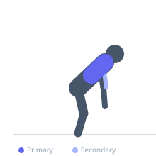

Exercise guide / Single-Arm Inverted Row
Single-Arm Inverted Row
The single-arm inverted row is a unilateral horizontal pulling exercise performed with one hand on a bar or ring while the other arm rests at the side or is held in front. It demands significantly greater core anti-rotation strength than the bilateral version and allows for independent loading of each side to identify and address left-right strength imbalances.
Primary muscles
latissimus dorsi
rhomboid major
Secondary muscles
biceps brachii
trapezius middle
Stabilizers
erector spinae
transverse abdominis
Equipment
Smith Machine
Optional
Gymnastic Rings


Starting position
- Grip one side of a bar or ring with one hand. Place the non-working hand across the chest or extended forward. Lean back into the starting position with the working arm extended.
Setup
- Set bar/ring height to control difficulty. Begin with a steeper body angle; progress to more horizontal as strength improves.
Steps
- Step 1: Begin in the angled dead-hang position on the working arm.
- Step 2: Row the chest toward the hand, driving the working elbow behind the torso.
- Step 3: Maintain strict anti-rotation in the torso — hips and shoulders stay square.
- Step 4: Lower under control back to the starting position.
- Step 5: Complete all reps on one side before switching.
Coaching cues
- Hips stay square — no rotation
- Imagine a broom handle through your shoulders — keep it level
- Full extension on every rep
Breathing
- Exhale on the pull. Inhale on the descent.
Range of motion
- Full arm extension to hand at or near the working-side chest.
Tempo
- 2-1-3-0
Common mistakes
- Rotating the torso toward the working side — maintain square shoulders
- Using the free hand to assist — it must remain off the bar
- Allowing the hips to drop
Safety
- Regress to bilateral inverted rows until sufficient unilateral strength exists
- Progress slowly — single-arm pressing and pulling loads the shoulder asymmetrically
Training
- strength: 5–8 reps
- hypertrophy: 8–12 reps
- strength: 3–4 sets
- Rest: {'strength': 120, 'hypertrophy': 90}